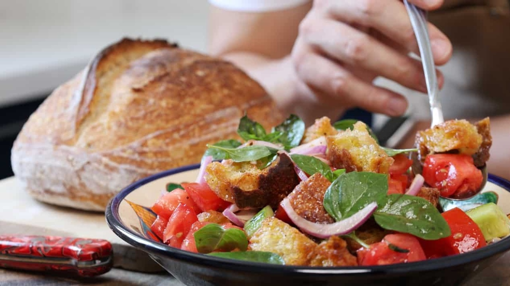

Sourdough Panzanella Salad Recipe

Description
Panzanella salad is everything there is to love about summer. Blood red tomatoes, plump cucumbers and sharp red onions are lightly salted to release their natural juices. Extra virgin olive oil, vinegar and basil complete the dressing, finally, bread is tossed through the salad to soak up the juices.
Traditional Tuscan bread is normally used in the salad but as my boss loved sourdough, I was baking it daily and it quickly became a staple in my Panzanella. This salad has few ingredients so quality of those ingredients is incredibly important.
Ingredients
- 2 large red tomatoes (room temperature)
- 1 small plump cucumber or one-third of a large cucumber
- 1 small red onion
- Fresh basil
- Sea salt
- Black pepper
- 3-5 medium garlic cloves
- 2 large slices of sourdough (or 150-200 grams)
- Extra virgin olive oil
- Red wine vinegar
Steps
- Rip or cut your sourdough into rough pieces and add them to a roasting tray.
- Leave the skin on the garlic and crush it under your hand and add it to the roasting tray.
- Drizzle with extra virgin olive oil, sprinkle with salt and toss the sourdough to make sure it is coated.
- Roast in an oven that has been pre-heated to 220C (430F) for about ten minutes until golden with dark tinges.
- Remove the sourdough pieces from the tray and leave them to cool on a plate until needed.
- Remove the core from the tomato, cut it into bite-sized pieces and place them into a mixing bowl.
- Peel the cucumber but do not remove the core, cut it into pieces and place it in the mixing bowl.
- Peel and slice the red onion and add this to the bowl along with several leaves of fresh basil.
- Generously season the vegetables with salt and black pepper and leave them to rest at room temperature. After 5-10 minutes you will see a pool of juice at the bottom of the mixing bowl.
- Add a generous amount of extra virgin olive oil along with a drizzle of red wine vinegar.
- Add several more leaves of fresh basil and the roasted sourdough.
- Toss the salad and allow it to sit until the sourdough has softened by soaking up the juice.
- Serve immediately and enjoy!